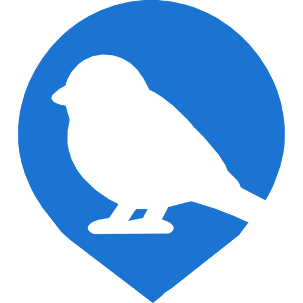

SPARROWMAP The map is live.Watching the watchers
Volunteers point a spare phone at a street. It reads the vehicles that go past, keeps the government ones, and destroys everything else on the device, before anything is sent anywhere.
The photo and the plate are kept, and they become the public record. Public money, public roads, public vehicles.
The plate is destroyed on the camera itself, before anything leaves it. What reaches the server is an anonymous dot with no photo and no plate.
There is nothing to install and no account to make. It runs in a browser tab on a phone you have already stopped using, propped in a window.
The detection runs on the phone, not on a server. That matters more than it sounds: if the video were uploaded for a server to look at, there would be a video feed to intercept. There is not one.
A spare PC with a webcam can run the full detector locally — it tells a patrol car from an ordinary one on the machine, and reads plates. One command sets it up and starts contributing to the map:
irm https://sparrowmap.com/install-node-windows.ps1 | iex in PowerShell, or download SparrowMapCameraSetup.execurl -fsSL https://sparrowmap.com/install-node-linux.sh | bash